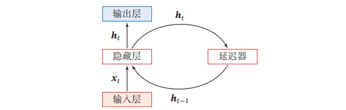
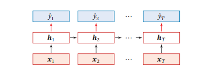
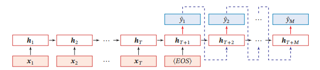
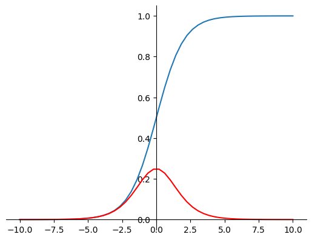
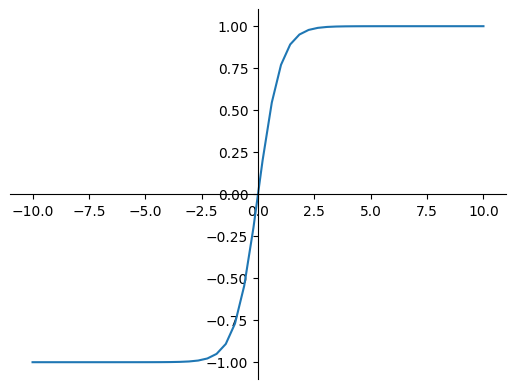
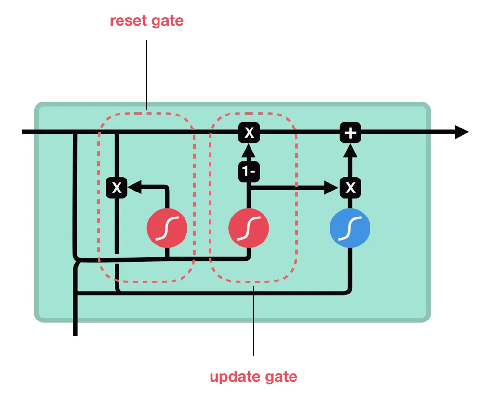

从RNN到LSTM和GRU
RNN
引入 RNN，自然涉及到原有神经网络的缺点，比如前馈神经网络的一个缺点就是，信息传递是单向的，因此当前的输出只由当前输入决定。但是很多任务不会这么简单，比如有限自动机的输出不仅和当前输入有关，还和当前的状态有关，。为了处理类似的时序数据，需要一种有 记忆能力 的神经网络。
循环神经网络的结构图

每个时刻的状态 ，包含了当前的输入和历史信息，延迟器是用来记录神经元最近几次的活性值
RNN 中不同的场景
输入输出序列长度相同，同步的模式：

输入输出长度不同，异步的模式，即 encoder-decoder，比如机器翻译：

RNN 中的数据传播
以同步模式为例，RNN 的前向传播为

RNN 的一个重复模块中，之前的隐状态和当前的输入合并，经过激活函数可以得到当前的隐状态，这个隐状态用于计算当前模块的输出，并传递给下个模块。
损失函数为 ，反向传播有两种算法：随时间反向传播（BPTT）以及实时循环学习（RTRL），前者需要记录所有时刻的梯度，虽然计算速度更快，但空间复杂度更高，后者利用的是前向模式，适合在线学习和无限长序列。
RNN 中的梯度问题，序列数据某时刻可能和很长时刻前存在依赖关系，但是 RNN 可能会受时刻更近的数据影响更大，不擅长处理这种长依赖关系。解决方法是使用改进了结构的 GRU 和 LSTM
当每一项都大于 1 时，梯度会成指数型的增加，出现梯度爆炸，会让参数变化不稳定，模型容易出现数值溢出，梯度爆炸的解决方式是梯度修剪。
LSTM
前面提到了 RNN 具有短期记忆的问题，难以处理长序列，于是出现了长短期记忆网络(LSTM)。LSTM 能记住序列数据中较重要的数据，忘掉没那么重要的，类似于人阅读提取关键信息的过程。

LSTM 中两个比较重要的概念，一个是作为网络记忆的状态，一个是用于控制对信息进行遗忘或保留的门控机制(Gating Mechanism)
门控机制
首先门控机制中两个比较重要的激活函数是 sigmoid 函数和 tanh 函数，先分析这两个函数的特点。
图中蓝色曲线为 sigmoid 函数，是 s 型曲线

该函数能将实数压缩到 的区间上，且该函数是处处可微的，红色曲线为 sigmoid 函数的导数
tanh 函数如图

这个函数将实数压缩到 区间
sigmoid 和 tanh 函数都有一个问题，就是容易导致梯度消失
LSTM 中的门控机制有三种门，输入门，输出门和遗忘门
遗忘门
之前的隐状态和当前的输入进入 sigmoid 函数，sigmoid 的输出是在 0 到 1 之间的，因此可以代表遗忘和保留的状态

比如 为 0 时，输出的隐状态为 0，控制要不要输出过去的信息
输入门
输入门是获取更新状态的值。首先需要将上一时刻的隐状态和当前输入通过 sigmoid 函数，得到的值用于决定哪些值更重要，并用于更新；然后隐状态和输入也要通过 tanh 函数，得到的候选值和第一个得到的值相乘，得到状态的更新量

前一时刻的状态和遗忘门的结果相乘，得到遗忘后的状态，然后加上更新得到新的状态值

输出门
输出门决定下一个隐状态需要输出多少部分的状态。

GRU
门控循环单元（GRU）也引入了门控机制来控制信息更新。GRU 的想法和 LSTM 类似，结构如下

更新门 控制前一时刻信息带入当前状态的程度
重置门控制上一时刻隐状态怎么和当前输入结合
候选的隐状态由重置后的上一时刻的隐状态更新后和当前的输入得到
然后通过更新门对前一时刻隐状态和当前的候选状态进行更新，可以看到更新门是 1 的时候，新状态和上一时刻是一样的，更新门为 0 时，新状态和当前的候选状态一样。
GRU 同 LSTM 相比，将状态和隐状态合并到，然后将遗忘门和输入门的功能放到更新门中完成。参数量更少，速度更快。